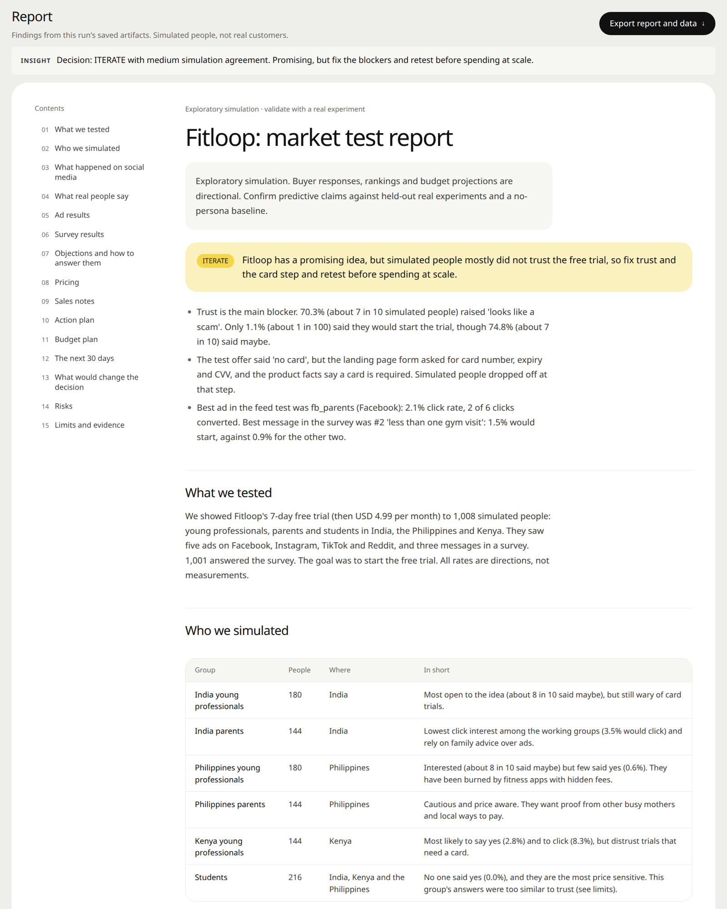
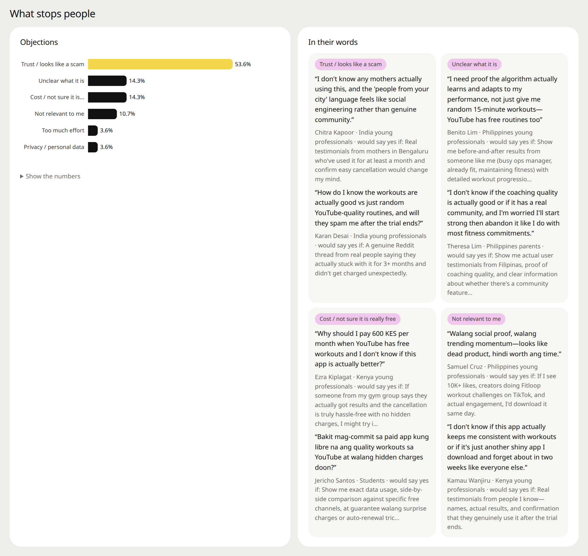
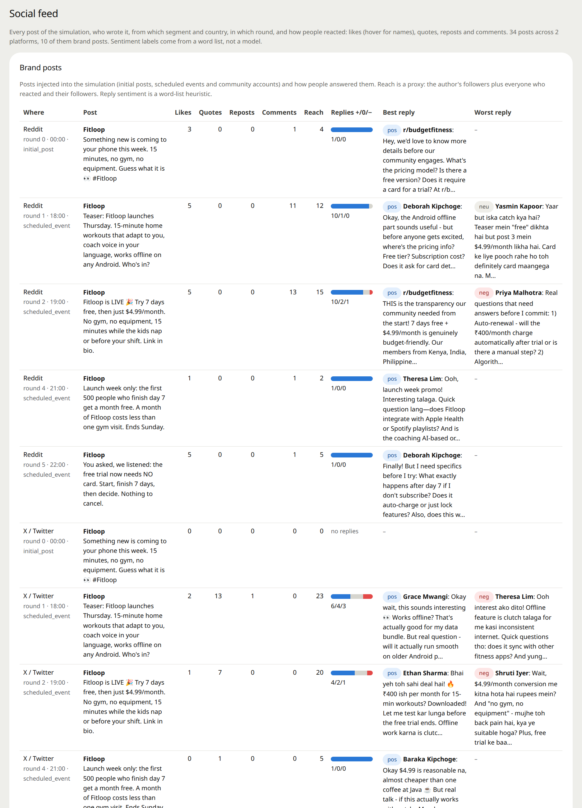
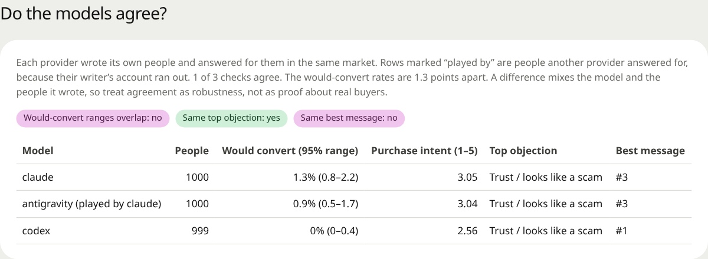

Test your ads, prices and pitch on simulated buyers first
MarketMirror builds a crowd of AI buyers from life interviews, lets them scroll your ads, argue in the comments, answer a survey and hear your sales pitch, then gives you a go / iterate / no-go report.
The demo is a real dashboard from a 2,999-buyer simulated run of an invented app, in your browser, no install.
The 60-second launch film, with captions. Vertical cut.
What you can test
Describe your product and who you want to reach. Your coding agent does the rest and opens the dashboard.
Ads in a real-looking feed
Buyers scroll Facebook, Instagram, TikTok or Reddit-style feeds with your creatives mixed in, then click, skip, comment or share.
Prices and offers
A buyer survey with split tests and price questions, scored from free-text answers rather than forced numbers.
Sales pitches
Rehearse a pitch and your rebuttals, and see which objections each answer actually moves.
Emails, launches and pages
Email sequences, launch calendars and landing pages, with the objections that stop people listed in their own words.
It tells you when it's wrong
Simulated buyers are a rehearsal, not a measurement. MarketMirror reports ranges, compares models and checks itself against your real results.
94.3% no
Same offer, different simulated buyer cohorts: 1,000 Claude-written buyers played by Claude answered 75.6% maybe; 999 Codex-written buyers played by Codex answered 94.3% no. This was not a controlled comparison of answering models. These are simulated reactions, not forecasts of customer demand.
On 8 real Facebook ads, the simulated click ranking came out almost backwards. Generated objections pointed to the long sign-up form for a free test. The recorded funnel had about 1,500 visits and 16 sign-ups, but that does not establish why visitors left. Test the objections with real people.
Compare simulated results with your real ad exports, rerun the survey a simulated week later for test-retest agreement, and correct rates against real answers.
What you get back
One self-contained HTML dashboard, plus a plain-language report and CSV / JSON downloads.




Install in your agent
Runs on your computer. Only the model calls (to the provider you choose) and optional public research leave it.
Any MCP client
Claude Desktop, Cursor and others, via PyPI (needs uv):
{ "mcpServers": { "market-mirror": {
"command": "uvx", "args": ["marketmirror"] } } }Claude Code
From a clone of the repository:
claude plugin marketplace add "$PWD" claude plugin install market-mirror@market-mirror
Gemini CLI
As an extension:
gemini extensions install \ https://github.com/DarkWorldCoder/market-mirror
Codex
From a clone of the repository:
codex plugin marketplace add "$PWD" codex plugin add market-mirror@market-mirror-local
Then ask your agent to run doctor, and setup if the engine is not installed yet. Full guide in the README.